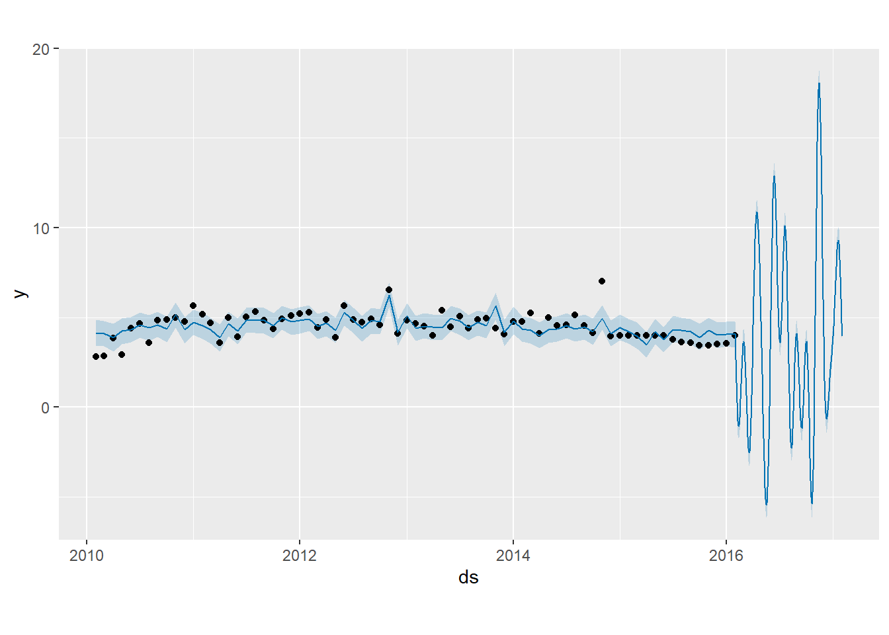

Capítulo 5 Unidad 6
Actividad 6
Cargar los datos
## Warning: package 'openxlsx' was built under R version 4.2.3# Leer el archivo Excel que ya tienes cargado
datos <- read.xlsx("importacionestriadadef.xlsx")
summary(datos)## Fecha Año Mes Año-mes
## Length:73 Min. :2010 Length:73 Length:73
## Class :character 1st Qu.:2011 Class :character Class :character
## Mode :character Median :2013 Mode :character Mode :character
## Mean :2013
## 3rd Qu.:2014
## Max. :2016
## FECHA_PRESENTACION VALOR_FOB_USD PESTICIDA
## Min. :40210 Min. :2.828 Length:73
## 1st Qu.:40756 1st Qu.:3.977 Class :character
## Median :41306 Median :4.554 Mode :character
## Mean :41304 Mean :4.484
## 3rd Qu.:41852 3rd Qu.:4.922
## Max. :42401 Max. :7.006Del total de los datos se seleccionan los campos “Fecha_Presentación” y “Valor_FOB_USD”, este ultimo corresponde al precio por kilo del insecticida.
Se reestablece el formato fecha para trabajar con los datos
Al importar los datos de excel se requiere organizarlos en orden ascendente de acuerdo a la fecha
## Warning: package 'dplyr' was built under R version 4.2.3##
## Attaching package: 'dplyr'## The following objects are masked from 'package:stats':
##
## filter, lag## The following objects are masked from 'package:base':
##
## intersect, setdiff, setequal, union## Warning: package 'zoo' was built under R version 4.2.3##
## Attaching package: 'zoo'## The following objects are masked from 'package:base':
##
## as.Date, as.Date.numeric## Warning: package 'forecast' was built under R version 4.2.3## Registered S3 method overwritten by 'quantmod':
## method from
## as.zoo.data.frame zoo## FECHA_PRESENTACION VALOR_FOB_USD
## 1 2010-02-01 2.828185
## 2 2010-03-01 2.834620
## 3 2010-04-01 3.854530
## 4 2010-05-01 2.916667
## 5 2010-06-01 4.409457
## 6 2010-07-01 4.636978
## 7 2010-08-01 3.571429
## 8 2010-09-01 4.855076
## 9 2010-10-01 4.885341
## 10 2010-11-01 4.969938
## 11 2010-12-01 4.761905
## 12 2011-01-01 5.654762
## 13 2011-02-01 5.179527
## 14 2011-03-01 4.704291
## 15 2011-04-01 3.571429
## 16 2011-05-01 4.974490
## 17 2011-06-01 3.899573
## 18 2011-07-01 5.014854
## 19 2011-08-01 5.325329
## 20 2011-09-01 4.851072
## 21 2011-10-01 4.376815
## 22 2011-11-01 4.921825
## 23 2011-12-01 5.105262
## 24 2012-01-01 5.196981
## 25 2012-02-01 5.288699
## 26 2012-03-01 4.429228
## 27 2012-04-01 4.861111
## 28 2012-05-01 3.885281
## 29 2012-06-01 5.654762
## 30 2012-07-01 4.874827
## 31 2012-08-01 4.727683
## 32 2012-09-01 4.894822
## 33 2012-10-01 4.586640
## 34 2012-11-01 6.547619
## 35 2012-12-01 4.105804
## 36 2013-01-01 4.838826
## 37 2013-02-01 4.664036
## 38 2013-03-01 4.489247
## 39 2013-04-01 4.005792
## 40 2013-05-01 5.400073
## 41 2013-06-01 4.488467
## 42 2013-07-01 5.071175
## 43 2013-08-01 4.414930
## 44 2013-09-01 4.889079
## 45 2013-10-01 4.935887
## 46 2013-11-01 4.397211
## 47 2013-12-01 4.075954
## 48 2014-01-01 4.761905
## 49 2014-02-01 4.761905
## 50 2014-03-01 5.257170
## 51 2014-04-01 4.104882
## 52 2014-05-01 5.001191
## 53 2014-06-01 4.554254
## 54 2014-07-01 4.581352
## 55 2014-08-01 5.118161
## 56 2014-09-01 4.549266
## 57 2014-10-01 4.140230
## 58 2014-11-01 7.006366
## 59 2014-12-01 3.953889
## 60 2015-01-01 3.976744
## 61 2015-02-01 3.976744
## 62 2015-03-01 3.976744
## 63 2015-04-01 3.976744
## 64 2015-05-01 3.975938
## 65 2015-06-01 3.976744
## 66 2015-07-01 3.753920
## 67 2015-08-01 3.605116
## 68 2015-09-01 3.599848
## 69 2015-10-01 3.419432
## 70 2015-11-01 3.419467
## 71 2015-12-01 3.506439
## 72 2016-01-01 3.558834
## 73 2016-02-01 3.976744Se cargan librerías para el análisis con el modelo
## Warning: package 'ggplot2' was built under R version 4.2.3## Warning: package 'fpp3' was built under R version 4.2.3## ── Attaching packages ────────────────────────────────────────────── fpp3 0.5 ──## ✔ tibble 3.2.1 ✔ tsibbledata 0.4.1
## ✔ tidyr 1.3.0 ✔ feasts 0.3.2
## ✔ lubridate 1.9.3 ✔ fable 0.3.4
## ✔ tsibble 1.1.4 ✔ fabletools 0.4.2## Warning: package 'tibble' was built under R version 4.2.3## Warning: package 'lubridate' was built under R version 4.2.3## Warning: package 'tsibble' was built under R version 4.2.3## Warning: package 'tsibbledata' was built under R version 4.2.3## Warning: package 'feasts' was built under R version 4.2.3## Warning: package 'fabletools' was built under R version 4.2.3## Warning: package 'fable' was built under R version 4.2.3## ── Conflicts ───────────────────────────────────────────────── fpp3_conflicts ──
## ✖ lubridate::date() masks base::date()
## ✖ dplyr::filter() masks stats::filter()
## ✖ tsibble::index() masks zoo::index()
## ✖ tsibble::intersect() masks base::intersect()
## ✖ tsibble::interval() masks lubridate::interval()
## ✖ dplyr::lag() masks stats::lag()
## ✖ tsibble::setdiff() masks base::setdiff()
## ✖ tsibble::union() masks base::union()## Warning: package 'prophet' was built under R version 4.2.3## Loading required package: Rcpp## Warning: package 'Rcpp' was built under R version 4.2.3## Loading required package: rlang## Warning: package 'rlang' was built under R version 4.2.3Se cambian los nombres de las columnas para trabajar con el modelo

Se ajustan los parámetros del modelo
## Disabling weekly seasonality. Run prophet with weekly.seasonality=TRUE to override this.## Disabling daily seasonality. Run prophet with daily.seasonality=TRUE to override this.## ds
## 433 2017-01-26
## 434 2017-01-27
## 435 2017-01-28
## 436 2017-01-29
## 437 2017-01-30
## 438 2017-01-31Mostrar las primeras filas de las predicciones
#Forecast
Pronostico <- predict(Model1, Future)
tail(Pronostico[c("ds", "yhat", "yhat_lower", "yhat_upper")])## ds yhat yhat_lower yhat_upper
## 433 2017-01-26 7.271938 6.568502 7.989090
## 434 2017-01-27 6.690441 5.953806 7.351424
## 435 2017-01-28 6.057413 5.375829 6.786565
## 436 2017-01-29 5.383918 4.782479 6.110365
## 437 2017-01-30 4.682163 3.959579 5.371958
## 438 2017-01-31 3.965203 3.275990 4.686904A continuación, se crea una trama. Podemos ver que los datos de entrenamiento están representados como puntos negros y el pronóstico es una línea azul con límites superior e inferior en un área sombreada en azul.
Podemos ver que los años previstos coinciden bien con las observaciones reales, especialmente si se tienen en cuenta los límites.

Para visualizar los componentes del modelo (tendencia, estacionalidad) se realiza visualización de estos componentes que nos da una idea del comportamiento de los datos anualmente y por día del año

El pronóstico y las visualizaciones de los componentes muestran que Prophet pudo modelar con precisión la tendencia subyacente en los datos, al mismo tiempo que modeló con precisión la estacionalidad diaria y anual